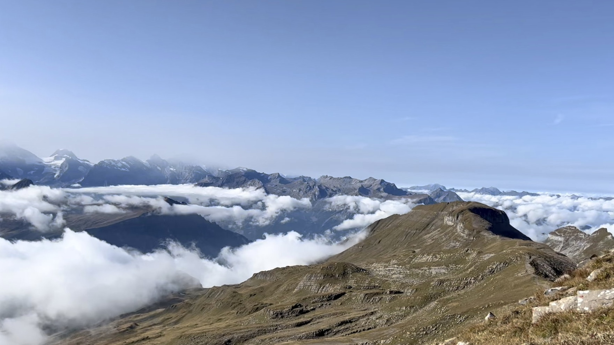

I’m building a labor organization platform, Pronto, to bring 100M people into the formal economy. We’ve raised $60M from investors like General Catalyst, Lachy Groom, and BCV. I believe that inefficiency in the unskilled and low skilled labor markets of the Global South, primarily a result of informal trade and the absence of structure, is a significant drag on GDP per capita.
I was born and raised in Northern Virginia.
In the past, I studied evolutionary biology at Georgetown, invested at a few places, and spent an unfortunate 10 weeks in investment banking at Morgan Stanley.
Among many things, I enjoy thinking about political economy, labor markets, and physical AI. You will often find me discussing how AI is reshaping emerging markets economies.
Outside of intellectual pursuits, I love hiking and am a big fan of anyone who owns a car in SF and is willing to drive me north of the bridge.